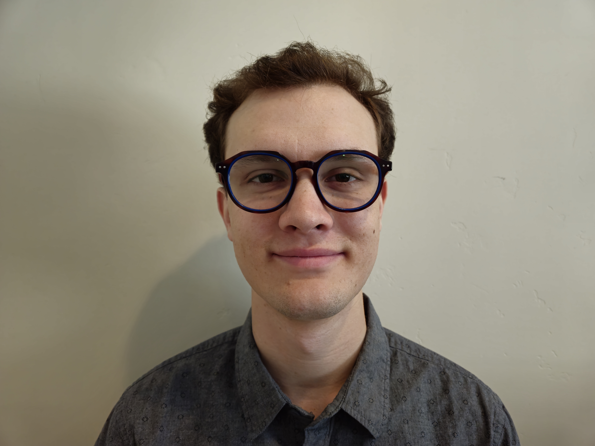

About Me
My name is Ethan Jensen and I love music and technology! I play the piano, viola, and the electric guitar! I also love playing video games and reading books. Some of my favorite games are most classic nintendo games like Marion Kart and the Legend of Zelda franchise! I also built my own tower computer and I love to play a lot of PC games using mouse and keyboard! I don't have a ton of coding experience, but I love using technology and I'm super excited to learn more about how the world of devices and tech works!
My Family
I'm from Meridian, Idaho and I grew up there basically my whole life! I have an older sister, an older brother, a younger brother, and a younger sister! So yeah, I'm the exact middle child! We don't have a family dog or cat at home, but we do have 2 bunny rabbits.